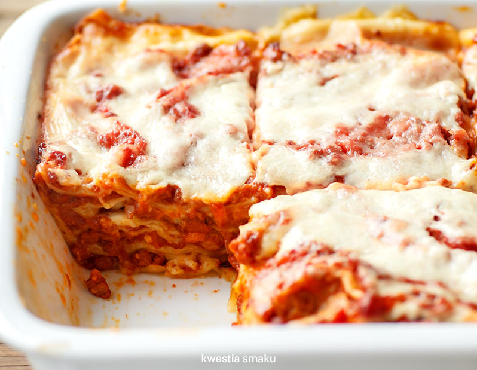

Lasagna Bolognese recipe:
Ingredients:
- 3 łyżki oliwy
- 1 cebula
- 2 łodygi selera naciowego
- 1 marchew
- 150g boczku wedzonego lub gotowanego
- 500g mielonego mięsa wieprzowo-wołowego
- 1 szklanka białego lub czerwonego wina
- 4 łyżki koncentratu pomidorowego
- 1 szklanka gorącego bulionu
- 400g passaty pomidorowej
Steps:
- Na oliwie, w dużym garnku, zeszklić drobno posiekaną cebulę, dodać posiekany w drobną kosteczkę seler naciowy oraz startą marchewkę (warzywa można też rozdrobnić w malakserze).
- Obsmażyć, następnie przesunąć na bok i w wolne miejsce włożyć pokrojony w drobną kosteczkę boczek. Zrumienić i wymieszać z warzywami.
- Przesunąć wszystko na bok garnka i partiami wkładać mięso: włożyć 1/3 część mięsa i obsmażyć mieszając co chwilę, aż zmieni kolor z czerwonego na brązowy. Następnie wymieszać z warzywami i boczkiem, przesunąć na bok, powtórzyć z resztą mięsa.
- Wlać wino i gotować na średnim ogniu przez 3 minuty, dodać gorący bulion wymieszany z koncentratem pomidorowym, zagotować, dodać passatę pomidorową.
- Doprawić solą i pieprzem. Przykryć i gotować na małym ogniu 2 godziny (można dłużej). Od czasu do czasu zamieszać.
STRONA GŁÓWNA